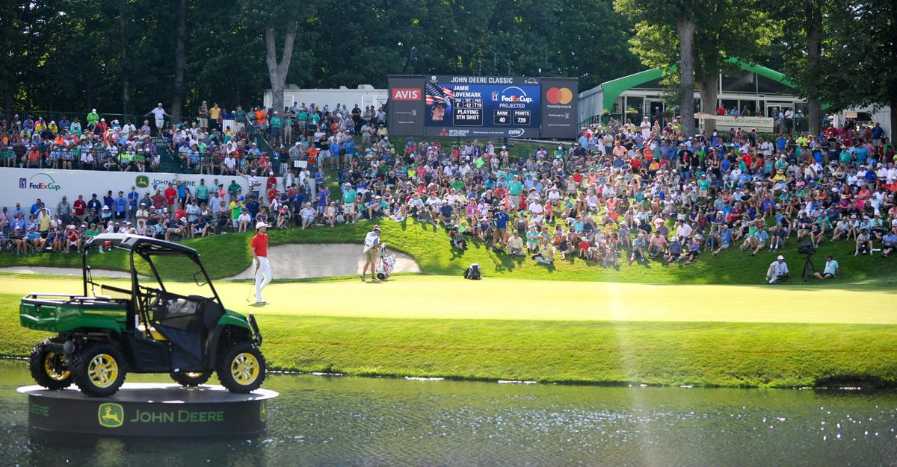
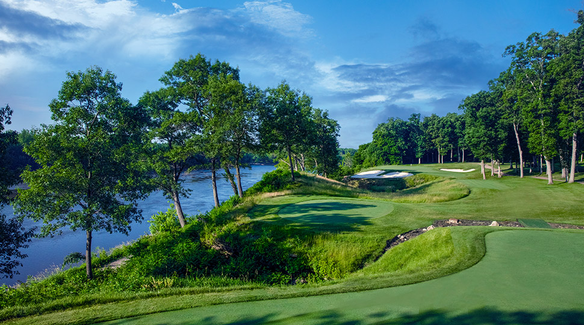

Home of the John Deere Classic

Hole 18

There was perhaps no architect more suited to craft TPC Deere Run golf course than designer, D.A. Weibring. As an Illinois native and three-time champion of the Quad Cities Classic (the forerunner to the John Deere Classic currently hosted by the club), Weibring knew exactly how to bring out the best of the picturesque Mid-Mississippi River Valley landscape while staying true to the PGA TOUR’s standards and traditions.
Weibring instilled an old-time feel to the TPC Deere Run golf course, providing a great blend of challenge and playability. “It has all the things I think you’d like to have in a golf course,” says Weibring. “There are elevation changes, great views and scenery, hardwood trees. You have the Rock River complemented with small ponds and deep ravines… and best of all, there’s no real estate. What’s more, the natural features of the former Arabian horse farm high above the Rock River Valley have not been compromised.”
Some of golf’s greatest names have found themselves seriously challenged by the risk-reward layout at TPC Deere Run each year at the John Deere Classic. You too, can have the same experience. Five sets of tees on each hole make for an enjoyable round for every level of player.
Byron Hills is a beautiful golf course nestled in the hills just east of the Mississippi River in Port Byron, Illinois. It is what golfing on the river is all about. It is wonderfully maintained course with green, watered fairways and fast greens. It is well known for many new improvements every year. It is a fun course, with plenty of interest to challenge even the most seasoned golfer, yet open enough for all golfers to have a pleasant experience. Byron Hills is a very popular, family-owned course that tries to make your golfing experience as enjoyable as possible.
Located only 20 minutes from tournament accomodations, Byron hills is perfectly located for the first Saturday round of the year.